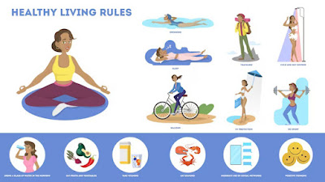

Правилна исхрана

За здравље је важно одржавати уравнотежену исхрану, богату витаминима и минералима. Правилна исхрана помаже у одржавању енергије и побољшава рад целог организма. На овој страници можете пронаћи корисне савете о томе шта јести и како планирати оброке.
- Воће и поврће у сваком оброку
- Целовите житарице за дуготрајну енергију
- Протеини из биљних и животињских извора
- Вода као најбољи избор пића
Вежбање за кондицију

Физичка активност је кључна за добро здравље. Без обзира на узраст, важно је редовно вежбати како бисте одржали физичку кондицију, јачали тело и побољшали ментално благостање. Погледајте наше препоруке за одговарајуће вежбе.
- Кардио тренинг: трчање, бициклизам, пливање
- Вежбе снаге: тегови, теретана, отпорни траке
- Флексибилност: јога, пилатес, истезање
- Редовно одмарање и опоравак